Build log / Nov 4, 2026
How small it really is
"85 × 46 × 18 mm" doesn't mean much until you see it. So I put the second prototype next to things people already know: a phone, the other handhelds on my desk, and a few keychain-sized consoles.
In the hand
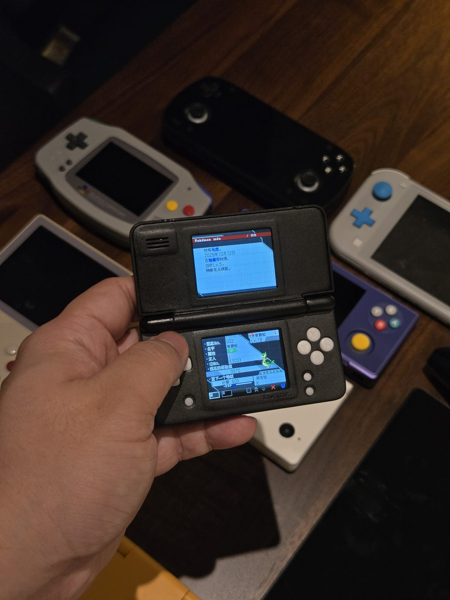
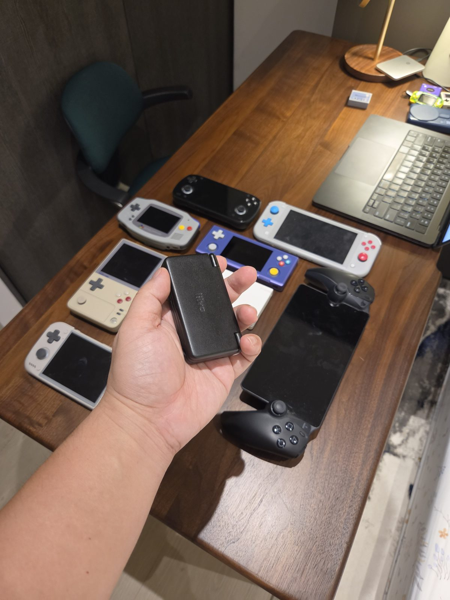
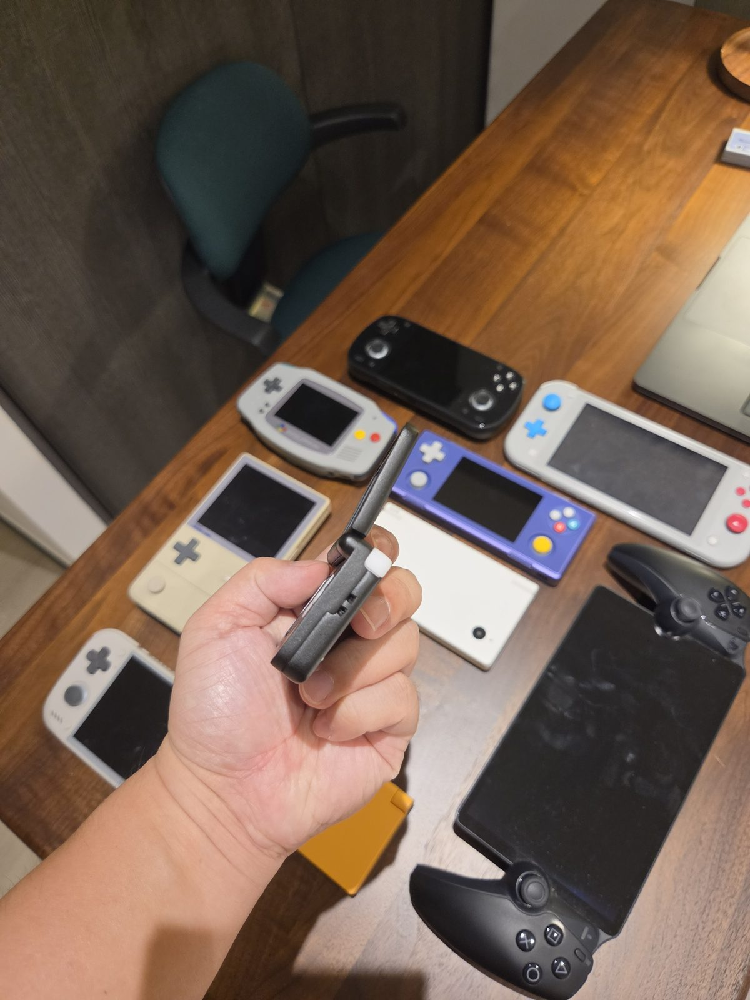
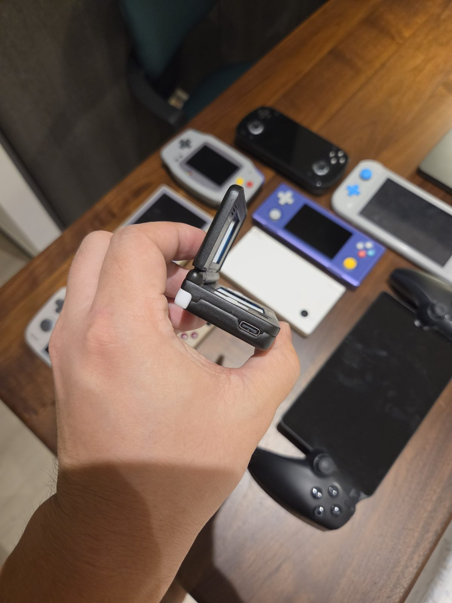
Next to a phone
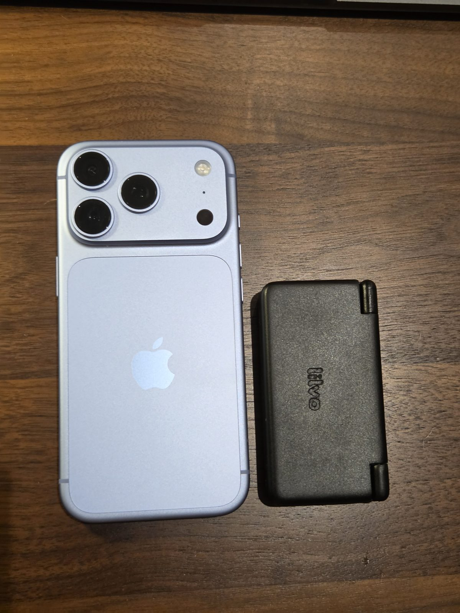
Next to my other handhelds
These are the handhelds I actually own and play. DS Micro is the small black one.
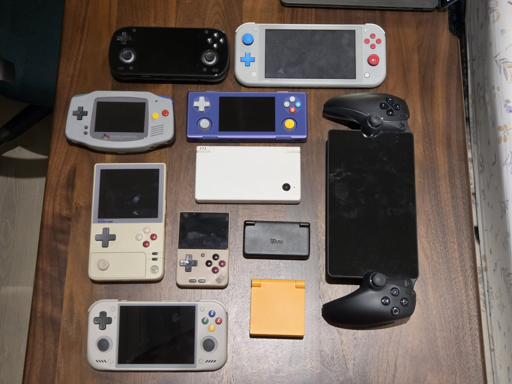
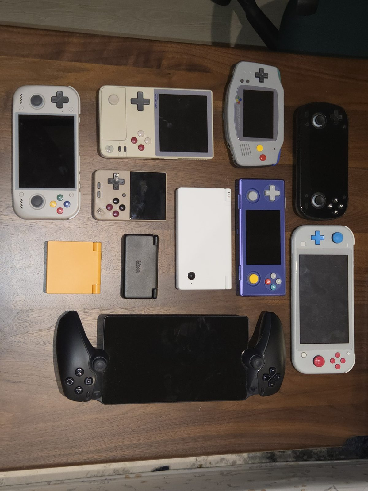
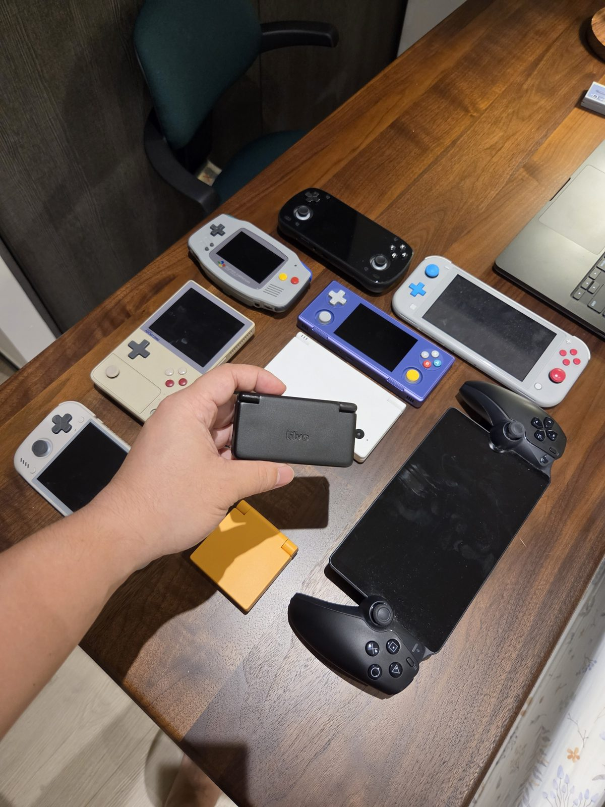
Next to keychain consoles
The smallest things I own that play games are keychain consoles. DS Micro is bigger than they are, but it has two screens, a hinge and real buttons.
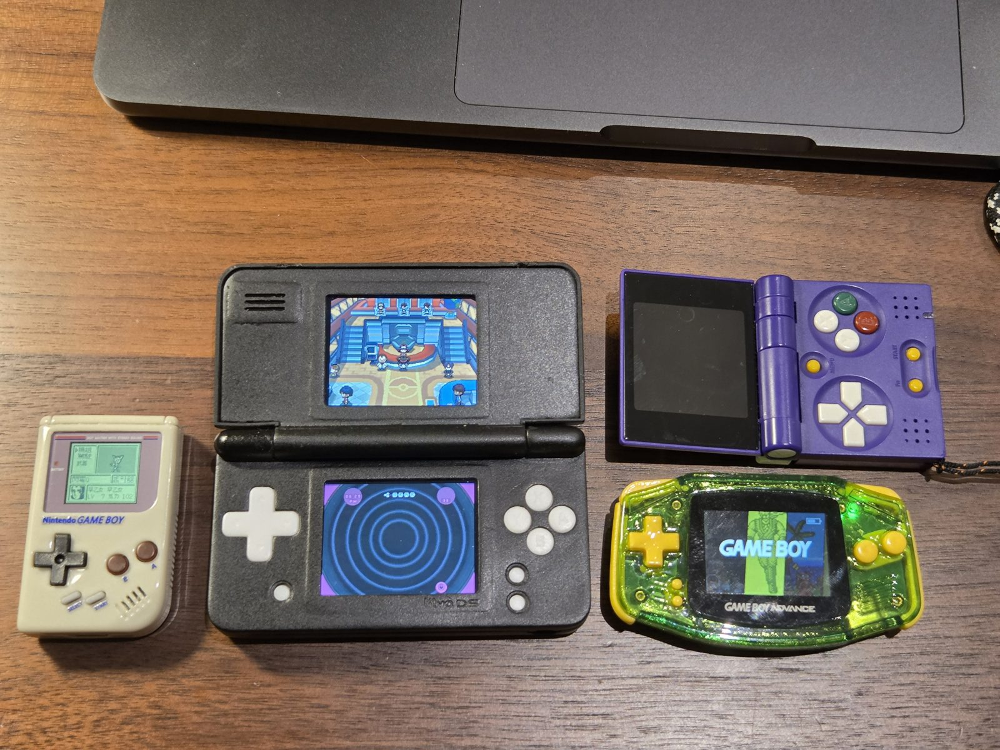
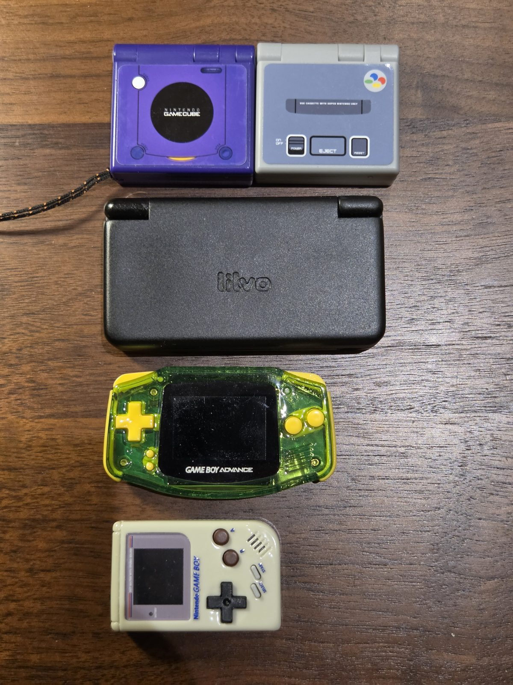
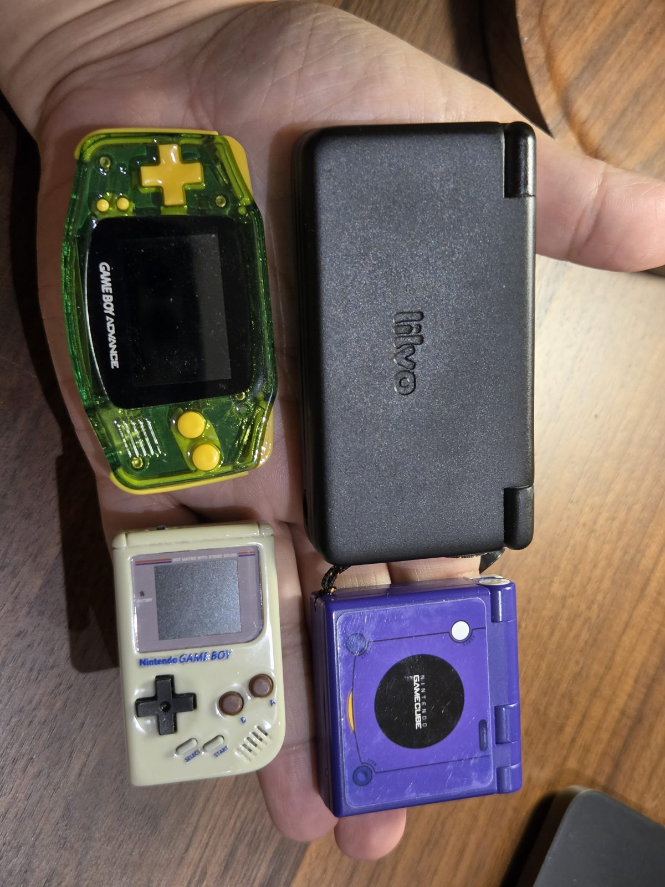
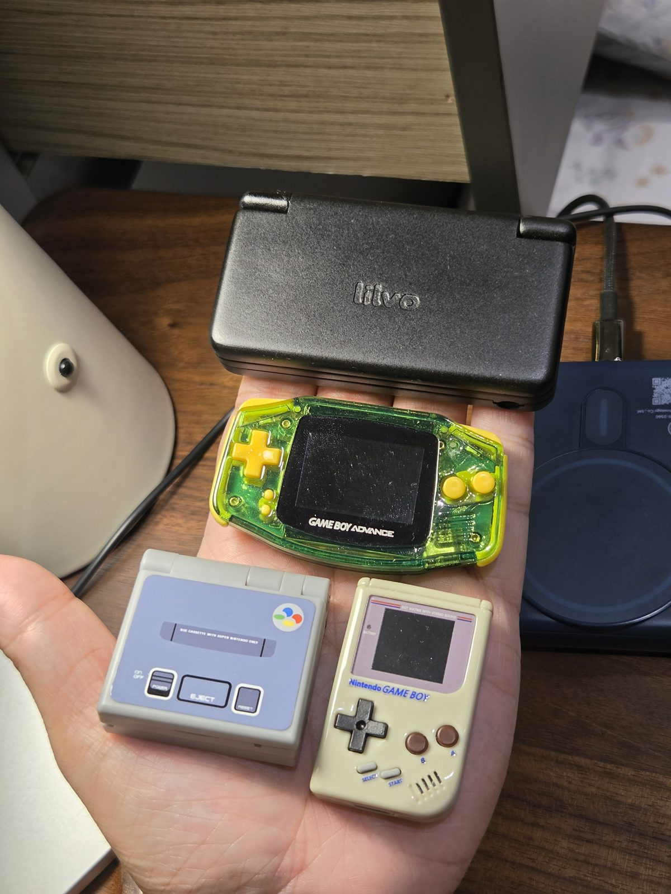
This is still the second prototype, with the shell sanded by hand. The production shell should be the same size, just cleaner.